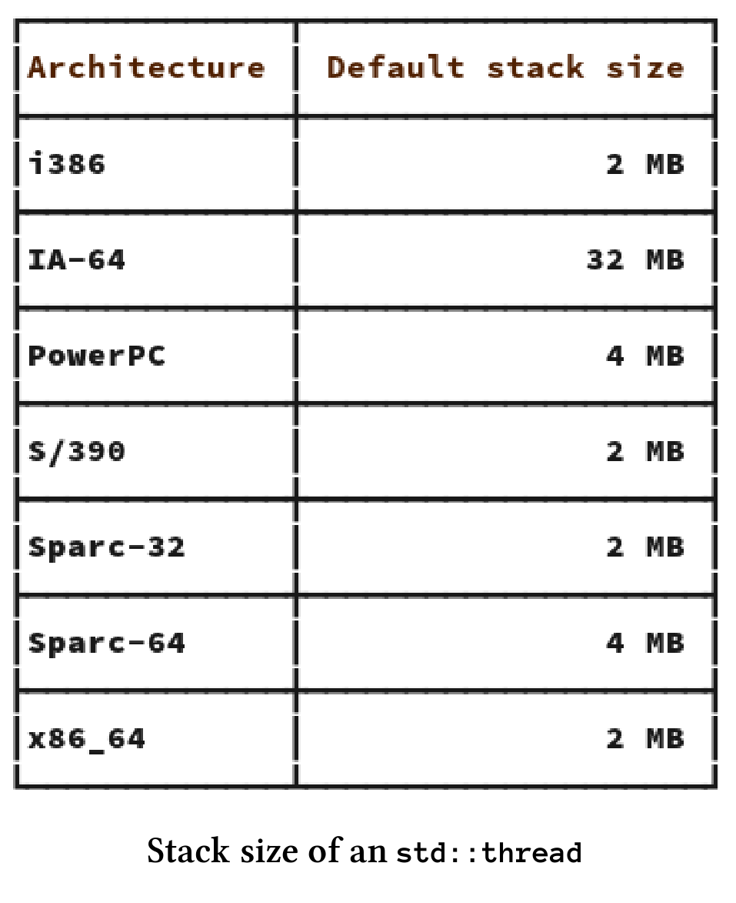
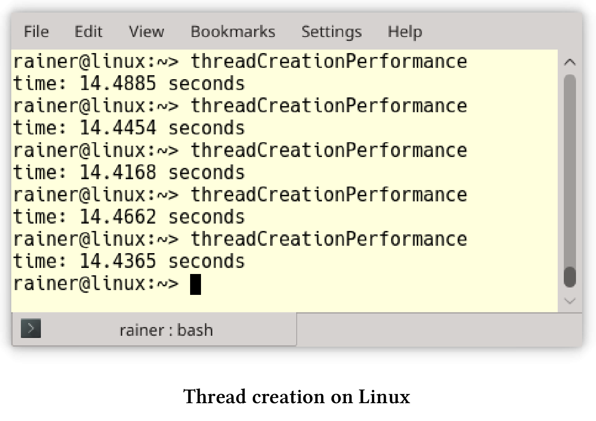
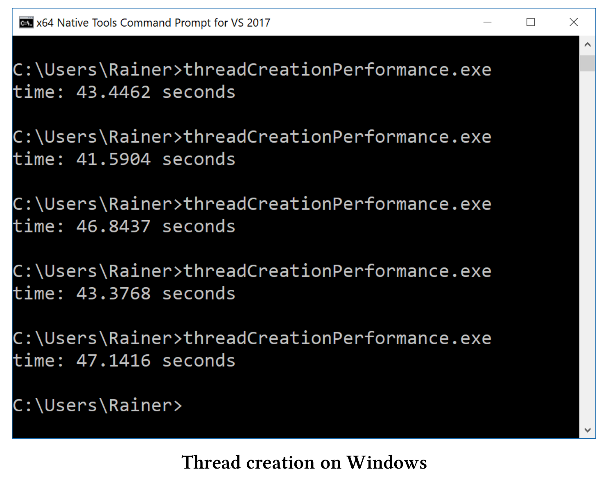
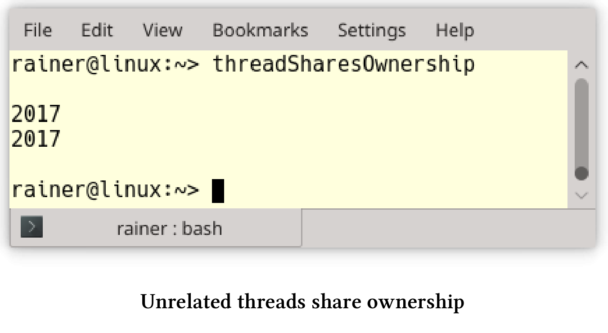
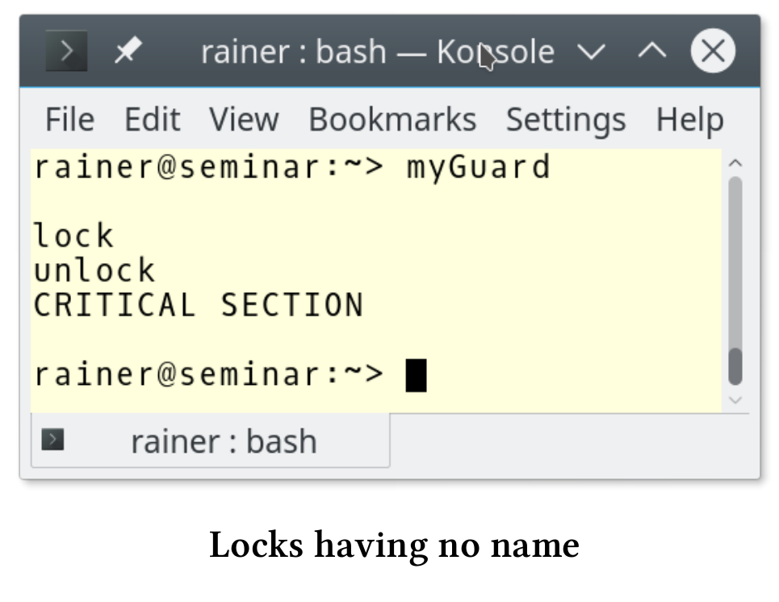

多线程
线程
线程是编写并发程序的基础件。
减少线程的创建
一个线程的开销有多大?非常巨大！这就是最佳实践背后的问题。让我们先看看线程的大小，而不是创建它的成本。
线程大小
std::thread是对本机操作系统线程的包装，这意味着需要对Windows线程和POSIX thread的大小进行了解：
- Windows：线程堆栈大小给了我答案：1MB。
- POSIX：pthread手册页为我提供了i386和x86_64架构的答案：2MB。下面有支持POSIX架构的线程堆栈大小：

创建耗时
我不知道创建一个线程需要多少时间，所以我在Linux和Windows上做了一个简单的性能测试。
我在台式机上使用GCC 6.2.1，在笔记本电脑上使用cl.exe(Visual Studio 2017)进行性能测试。我用最大优化来编译程序，这意味着在Linux上的优化标志为O3和Windows为Ox。
下面是我的程序。
// threadCreationPerformance.cpp
#include <chrono>
#include <iostream>
#include <thread>
static const long long numThreads = 1'000'000;
int main() {
auto start = std::chrono::system_clock::now();
for (volatile int i = 0; i < numThreads; ++i) std::thread([] {}).detach();
std::chrono::duration<double> dur = std::chrono::system_clock::now() - start;
std::cout << "time: " << dur.count() << " seconds" << std::endl;
}
该程序创建了100万个线程，这些线程执行第13行中的空Lambda函数。以下是在Linux和Windows测试的结果:
Linux

这意味着在Linux上创建一个线程大约需要14.5秒/ 1000000 = 14.5微秒。
Windows

在Windows上创建线程大约需要44秒/ 1000000 = 44微秒。
换句话说，在Linux上一秒钟可创建大约69000个线程，在Windows上一秒钟可创建23000个线程。
使用任务而不是线程
// asyncVersusThread.cpp
#include <future>
#include <thread>
#include <iostream>
int main() {
std::cout << std::endl;
int res;
std::thread t([&] {res = 2000 + 11; });
t.join();
std::cout << "res: " << res << std::endl;
auto fut = std::async([] {return 2000 + 11; });
std::cout << "fut.get(): " << fut.get() << std::endl;
std::cout << std::endl;
}
有很多原因让我们优先选择任务而不是线程：
- 可以使用一个安全的通信通道来返回结果。如果使用共享变量，则必须同步的对它进行访问。
- 调用者可以很容易的得到返回值、通知和异常。
通过扩展版future，我们可构建future，以及高度复杂的工作流。这些工作流基于continuation then，以及when_any和when_all的组合。
如果要分离线程，一定要非常小心
下面的代码片段需要我们关注一下。
std::string s{"C++11"}
std::thread t([&s]{ std::cout << s << std::endl; });
t.detach();
线程t与它的创建者的生命周期是分离的，所以两个竞态条件会导致未定义行为。
- 线程可能比其创建者的生命周期还长，结果是
t引用了一个不存在的std::string。 - 因为输出流
std::cout的生存期与主线程的生存期绑定在一起，所以程序在线程t开始工作之前，输出流就可能关闭了。
考虑使用自动汇入的线程
如果t.join()和t.detach()都没有调用，则具有可调用单元的线程t被称为可汇入的，这时进行销毁的话，析构函数会抛出std::terminate异常。为了不忘记t.join()，可以对std::thread进行包装。这个包装器在构造函数中检查给定线程是否仍然可连接，并将给定线程在析构函数中进行汇入操作。
我们不必自己构建这个包装器，可以使用Anthony Williams的scoped_thread，或是核心准则支持的库的gsl::joining_thread。
数据共享
随着可变数据的数据共享，也就开启了多线程编程的挑战。
通过复制传递数据
std::string s{"C++11"}
std::thread t1([s]{ ... }); // do something with s
t1.join();
std::thread t2([&s]{ ... }); // do something with s
t2.join();
// do something with s
如果将std::string s之类的数据通过复制传递给线程t1，则创建者线程和创建的线程t1使用独立的数据。线程t2相反，通过引用获取std::string s，这意味着必须同步对创建者线程和已创建线程t2中的s的访问。这里非常容易出错。
使用std::shared_ptr在非关联线程之间共享所有权
试想，有一个在非关联的线程之间共享的对象存在。接下来的问题是，对象的所有者是谁？谁负责这个对象的内存管理？现在，可以在内存泄漏(如果不释放内存)和未定义行为(因为多次调用delete)之间进行选择。大多数情况下，未定义行为会使运行时崩溃。
下面的程序展示了这个看似无解的问题。
// threadSharesOwnership.cpp
#include <iostream>
#include <thread>
using namespace std::literals::chrono_literals;
struct MyInt {
int val{ 2017 };
~MyInt() {
std::cout << "Good Bye" << std::endl;
}
};
void showNumber(MyInt* myInt) {
std::cout << myInt->val << std::endl;
}
void threadCreator() {
MyInt* tmpInt = new MyInt;
std::thread t1(showNumber, tmpInt);
std::thread t2(showNumber, tmpInt);
t1.detach();
t2.detach();
}
int main() {
std::cout << std::endl;
threadCreator();
std::this_thread::sleep_for(1s);
std::cout << std::endl;
}
这个例子很简单，主线程休眠1秒钟(第34行)，以确保它比子线程t1和t2的生命周期长。当然，这不是恰当的同步，但帮我阐明了观点。程序的关键是：谁负责删除第20行中的tmpInt ?线程t1(第22行)？还是线程t2(第23行)？或函数本身(主线程)？因为无法预测每个线程运行多长时间，所以这个程序应该会有内存泄漏。因此，第10行中的MyInt的析构函数永远不会被调用:

如果使用std::shared_ptr，则生命周期问题就很容易处理。

// threadSharesOwnershipSharedPtr.cpp
#include <iostream>
#include <memory>
#include <thread>
using namespace std::literals::chrono_literals;
struct MyInt {
int val{ 2017 };
~MyInt() {
std::cout << "Good Bye" << std::endl;
}
};
void showNumber(std::shared_ptr<MyInt> myInt) {
std::cout << myInt->val << std::endl;
}
void threadCreator() {
auto sharedPtr = std::make_shared<MyInt>();
std::thread t1(showNumber, sharedPtr);
std::thread t2(showNumber, sharedPtr);
t1.detach();
t2.detach();
}
int main() {
std::cout << std::endl;
threadCreator();
std::this_thread::sleep_for(1s);
std::cout << std::endl;
}
对源代码进行两个小的必要的修改：首先，第21行中的指针变成了std::shared_ptr，然后，第16行中的函数showNumber接受了一个智能指针，而不是普通指针。
尽量减少持有锁的时间.
如果持有锁，那么只有单个线程可以进入临界区。
void setDataReadyBad(){
std::lock_guard<std::mutex> lck(mutex_);
mySharedWork = {1, 0, 3};
dataReady = true;
std::cout << "Data prepared" << std::endl;
condVar.notify_one();
} // unlock the mutex
void setDataReadyGood(){
mySharedWork = {1, 0, 3};
{
std::lock_guard<std::mutex> lck(mutex_);
dataReady = true;
} // unlock the mutex
std::cout << "Data prepared" << std::endl;
condVar.notify_one();
}
函数setDataReadyBad和setDataReadyGood是条件变量的通知组件。可变的数据是必要的，以防止伪唤醒和未唤醒的发生。由于dataReady是一个非原子变量，因此必须使用锁lck对其进行同步。为了使锁的生命周期尽可能短，可以在函数setDataReadyGood中使用一个范围({…}) 。
将互斥量放入锁中
不应该使用没有锁的互斥量。
std::mutex m;
m.lock();
// critical section
m.unlock();
临界区内可能会发生意外，或者忘记解锁。如果不解锁，则想要获取该互斥锁的另一个线程将被阻塞，最后程序将死锁。
由于锁可以自动处理底层的互斥量，因此死锁的风险大大降低了。根据RAII习惯用法，锁在构造函数中自动绑定互斥量，并在析构函数中释放互斥量。
{
std::mutex m,
std::lock_guard<std::mutex> lockGuard(m);
// critical section
} // unlock the mutex
({…})范围确保锁的生命周期自动结束，所以底层的互斥量会被解锁。
最多锁定一个互斥锁
有时在某个时间点需要多个互斥锁，这种情况下，可能会引发死锁的竞态条件。因此，可能的话，应该尽量避免同时持有多个互斥锁。
给锁起个名字
如果使用没有名称的锁，比如std::lock_guard，那么将立即销毁。
{
std::mutex m,
std::lock_guard<std::mutex>{m};
// critical section
}
这个看起来无害的代码片段中，std::lock_guard立即被销毁。因此，下面的临界区是不同步执行的。C++标准的锁遵循所有相同的模式，会在构造函数中锁定互斥锁，并在析构函数中解锁，这种模式称为RAII。
下面例子的行为令人惊讶:
// myGuard.cpp
#include <mutex>
#include <iostream>
template <typename T>
class MyGuard {
T& myMutex;
public:
MyGuard(T& m) :myMutex(m) {
myMutex.lock();
std::cout << "lock" << std::endl;
}
~MyGuard() {
myMutex.unlock();
std::cout << "unlock" << std::endl;
}
};
int main() {
std::cout << std::endl;
std::mutex m;
MyGuard<std::mutex> {m};
std::cout << "CRITICAL SECTION" << std::endl;
std::cout << std::endl;
}
MyGuard在其构造函数和析构函数中调用lock和unlock。由于临时变量的原因，对构造函数和析构函数的调用发生在第25行。特别是，这意味着析构函数的调用发生在第25行，而不是第31行。因此，第26行中的临界段没有同步执行。
这个程序的截图显示了，解锁的发生在输出CRITICAL SECTION之前。

使用std::lock或std::scoped_lock原子地锁定更多的互斥对象
如果一个线程需要多个互斥对象，那么必须非常小心地将互斥对象以相同的顺序进行锁定。如果不这样，一个糟糕的线程交叉就可能导致死锁。
void deadLock(CriticalData& a, CriticalData& b){
std::lock_guard<std::mutex> guard1(a.mut);
// some time passes
std::lock_guard<std::mutex> guard2(b.mut);
// do something with a and b
}
...
std::thread t1([&]{deadLock(c1,c2);});
std::thread t2([&]{deadLock(c2,c1);});
...
线程t1和t2需要两个CriticalData，而CriticalData用自己的mut来控制同步访问。不幸的是，因为这两个调用参数c1和c2的顺序不同，所以产生了一个竞态，从而会导致死锁。当线程t1可以锁定第一个互斥对象a.mut，而没锁住第二个b.mut ，这样线程t2锁住了第二个线程，而阻塞等待a.mut解锁，就会产生出一个死锁的状态。
现在有了std::unique_lock，可以对互斥锁进行延迟锁定。函数std::lock可以原子地对任意数量的互斥锁进行锁定。
void deadLock(CriticalData& a, CriticalData& b){
unique_lock<mutex> guard1(a.mut,defer_lock);
// some time passes
unique_lock<mutex> guard2(b.mut,defer_lock);
std::lock(guard1,guard2);
// do something with a and b
}
...
std::thread t1([&]{deadLock(c1,c2);});
std::thread t2([&]{deadLock(c2,c1);});
...
C++17有一个新锁std::scoped_lock，它可以获得任意数量的互斥锁并自动锁定它们。这样，工作流变得更加简单了：
void deadLock(CriticalData& a, CriticalData& b){
std::scoped_lock(a.mut, b.mut);
// do something with a and b
}
...
std::thread t1([&]{deadLock(c1,c2);});
std::thread t2([&]{deadLock(c2,c1);});
...
不要在持有锁时，调用未知代码
在持有互斥锁的同时，调用unknownFunction会导致未定义行为。
std::mutex m;
{
std::lock_guard<std::mutex> lockGuard(m);
sharedVariable= unknownFunction();
}
我只能对unknownFunction进行推测数。如果unknownFunction：
- 试图锁定互斥量
m，这就是未定义行为。大多数情况下，会出现死锁。 - 启动一个试图锁定互斥锁
m的新线程，就会出现死锁。 - 锁定另一个互斥锁
m2可能会陷入死锁，因为需要同时锁定了两个互斥锁m和m2。 - 不要直接或间接尝试锁住互斥锁，虽然一切可能都没什么问题。“可能”是因为你的同事，可以修改函数或函数是动态链接的，这样就会得到一个与已知版本不同的函数。对于可能发生的事情，所有一切都是可能的。
- 可能会出现性能问题，因为不知道
unknownFunction函数需要多长时间。
要解决这些问题，请使用局部变量。
auto tempVar = unknownFunction();
std::mutex m,
{
std::lock_guard<std::mutex> lockGuard(m);
sharedVariable = tempVar;
}
这种方式解决了所有的问题。tempVar是一个局部变量，因此不会成为数据竞争的受害者，所以可以在没有同步机制的情况下调用unknownFunction。此外，将tempVar的值赋给sharedVariable，可以将持有锁的时间降到最低。
条件变量
通过通知同步线程是一个简单的概念，但是条件变量使这个任务变得非常具有挑战性。主要原因是条件变量没有状态：
- 如果条件变量得到了通知，则可能是错误的(伪唤醒)。
- 如果条件变量在准备就绪之前得到通知，则通知丢失(未唤醒)。
不要使用没有谓词的条件变量
使用没有谓词的条件变量，通常是竞争条件之一。
// conditionVariableLostWakeup.cpp
#include <condition_variable>
#include <mutex>
#include <thread>
std::mutex mutex_;
std::condition_variable condVar;
void waitingForWork() {
std::unique_lock<std::mutex> lck(mutex_);
condVar.wait(lck);
// do the work
}
void setDataReady() {
condVar.notify_one();
}
int main() {
std::thread t1(setDataReady);
std::thread t2(waitingForWork);
t1.join();
t2.join();
}
如果线程t1在线程t2之前运行，就会出现死锁。t1在t2接收之前发送通知，通知就会丢失。这种情况经常发生，因为线程t1在线程t2之前启动，而线程t1需要执行的工作更少。
在工作流中添加一个布尔变量dataReady可以解决这个问题。dataReady还可以防止伪唤醒，因为等待的线程会检查通知是否来自于正确的线程。
// conditionVarialbleLostWakeupSolved.cpp
#include <condition_variable>
#include <mutex>
#include <thread>
std::mutex mutex_;
std::condition_variable condVar;
bool dataReady{ false };
void waitingForWork() {
std::unique_lock<std::mutex> lck(mutex_);
condVar.wait(lck, [] { return dataReady; });
// do the work
}
void setDataReady() {
{
std::lock_guard<std::mutex> lck(mutex_);
dataReady = true;
}
condVar.notify_one();
}
int main() {
std::thread t1(setDataReady);
std::thread t2(waitingForWork);
t1.join();
t2.join();
}
使用Promise和Future代替条件变量
对于一次性通知，promise和future则是更好的选择。conditioVarialbleLostWakeupSolved.cpp的工作流程，可以使用promise和future直接实现。
// notificationWithPromiseAndFuture.cpp
#include <future>
#include <utility>
void waitingForWork(std::future<void>&& fut) {
fut.wait();
// do the work
}
void setDataReady(std::promise<void>&& prom) {
prom.set_value();
}
int main() {
std::promise<void> sendReady;
auto fut = sendReady.get_future();
std::thread t1(waitingForWork, std::move(fut));
std::thread t2(setDataReady, std::move(sendReady));
t1.join();
t2.join();
}
工作流程被简化到极致。promiseprom.set_value()会发送futurefut.wait()正在等待的通知。因为没有临界区，程序不需要互斥量和锁。因为不可能发生丢失唤醒或虚假唤醒，所以有没有谓词也没有关系。
如果工作流要求多次使用条件变量，那么promise和future就是不二之选。
Promise和Future
promise和future常被用作线程或条件变量的替代物。
尽可能使用std::async
如果可能，应该使用std::async来执行异步任务。
auto fut = std::async([]{ return 2000 + 11; });
// some time passes
std::cout << "fut.get(): " << fut.get() << std::endl;
通过调用auto fut = std::async([]{ return 2000 + 11; })，相当于对C++运行时说：“运行这个”。调用者不关心它是否立即执行，以及是运行在同一个线程上，还有是运行在线程池上，或是运行在GPU上。调用者只对future的结果感兴趣：fut.get()。
从概念上看，线程只是运行作业的实现细节。对于线程而言，使用者应该只指定做什么，而不应该指定如何做。